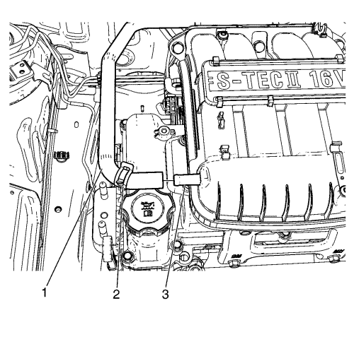
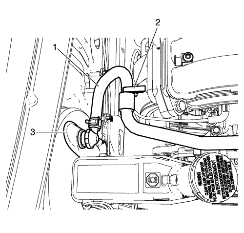
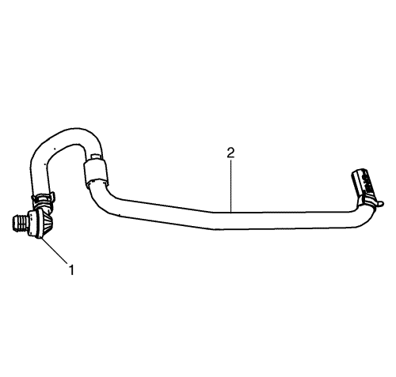

Pise y suelte el pedal de freno varias veces hasta que el pedal se ponga duro, para agotar la reserva de vacío del servofreno.

Comprima la abrazadera de fijación del tubo flexible de vacío (2) situada en la lumbrera de vacío del colector de admisión (3), y deslícela 50 mm (2 pulg.) por el tubo flexible de vacío (1).
Desconecte el tubo flexible de vacío (1), de la lumbrera de vacío del colector de admisión (3).

Suelte el tubo flexible de vacío (1), de los soportes de fijación situados en el colector de admisión (2).
Desmonte el tubo flexible de vacío y la válvula antirretorno del servofreno de vacío (1), del servofreno de vacío (3).

Si fuera necesario, desmonte la válvula antirretorno del servofreno de vacío (1), del tubo flexible de vacío (2).
Monte la válvula antirretorno del servofreno de vacío (1) en el tubo flexible de vacío (2).
Monte el tubo flexible de vacío y la válvula antirretorno del servofreno de vacío (1) en el servofreno de vacío (3).
Fije el tubo flexible de vacío (1) a los soportes de fijación situados en el colector de admisión (2).
Conecte el tubo flexible de vacío (1) a la lumbrera de vacío del colector de admisión (3).
Comprima la abrazadera de fijación del tubo flexible de vacío (2) y deslícela por el tubo flexible de vacío (1) hasta su posición correcta, para fijar el tubo flexible de vacío (1) a la lumbrera de vacío del colector de admisión (3).